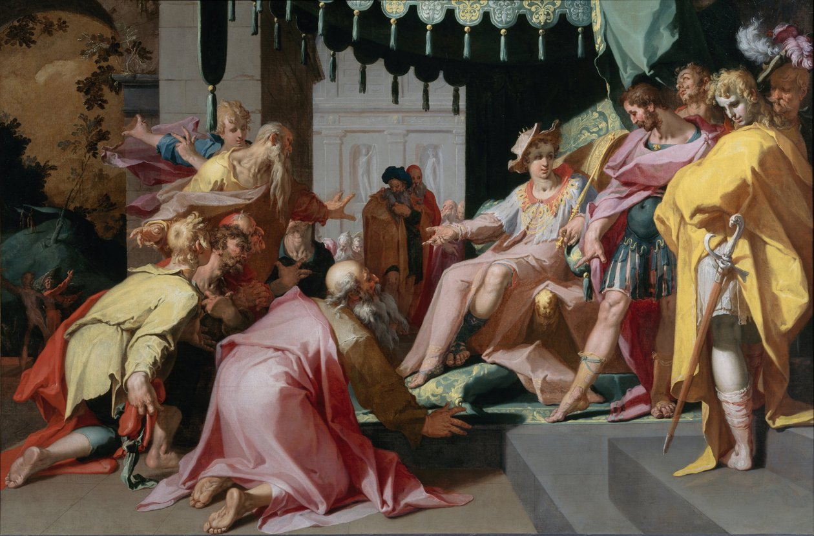
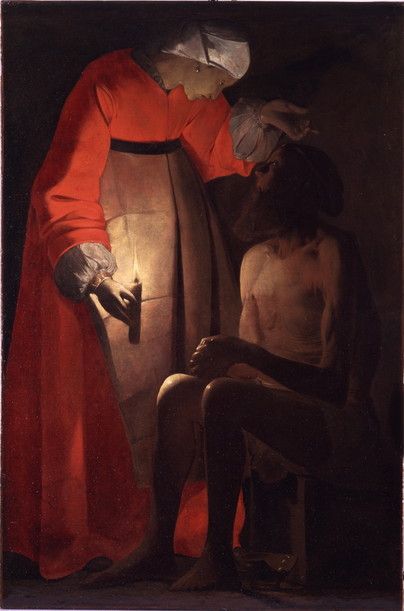
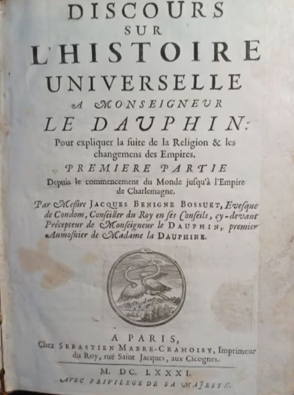
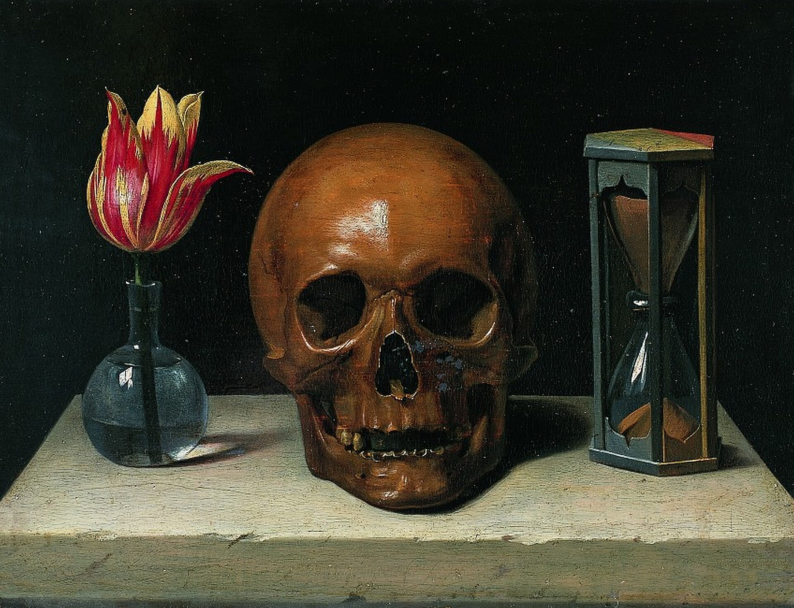
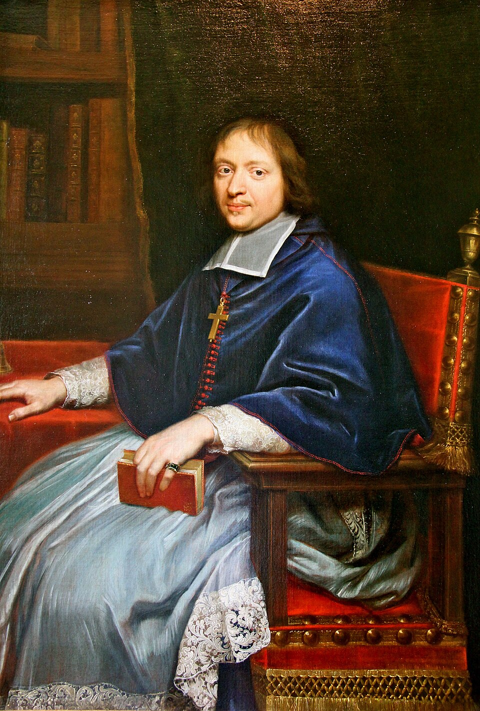
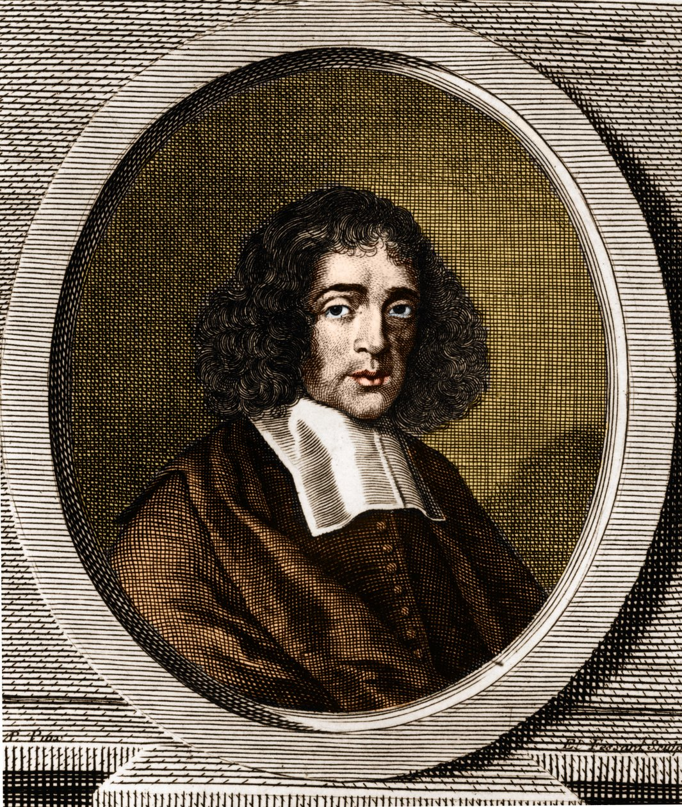

"Les voies de la divine Providence" ? Volonté de Dieu et mystère du mal
Au seuil de ce billet, je songe à l’embarras de Philippe Sellier, mon maître : bien que chrétien, il éprouvait un scrupule à évoquer, après les catastrophes du XXe siècle, l’idée que le monde est entre les mains du gouvernement bienveillant du Très-Haut. C’était pourtant le sentiment aussi bien de Pascal que de Bossuet, et il s’agit d’en comprendre les raisons. Bossuet ne vivait pas dans une époque plus radieuse que la nôtre, et néanmoins, sa foi dans la Providence transparaît à chaque page des oraisons. C’est ce point essentiel que nous allons tenter de comprendre.
« Cette cruelle ennemie » (p. 10)
Au cœur des oraisons funèbres, la mort.
Faut-il s’effrayer du trépas ? Pas forcément. Après tout, la mort n’est-elle pas inscrite dans l’ordre des choses ? Déja Aristote considérait que la disparition faisait partie du cours de la nature. Il estimait que tout ce qui vit sous la lune est soumis au cycle universel de la génération, de la corruption – et que tout doit finir par périr : « Περὶ δὲ γενέσεως καὶ φθορᾶς τῶν φύσει γινομένων καὶ φθειρομένων », « Quant à la génération et à la corruption des êtres qui naturellement naissent et périssent… » 1. Lucrèce, de même, voyait la dissolution du corps et de l’âme comme le terme ultime de l’existence : « Ergo dissolui quoque convenit omnem animal / naturam, ceu fumus, in altas aëris auras », « Il faut donc que toute la nature de l’âme se dissolve elle aussi, comme une fumée, dans les hautes régions de l’air. » 2. Beaucoup plus près de Bossuet, Montaigne tendait aussi à neutraliser la mort : le maire de Bordeaux se dépeint « nonchalant d’elle » et précise que « Vostre mort est une des pièces de l’ordre de l’univers. C’est une pièce de la vie du monde ». Il renchérit dans Essais, III, 13 : « Tu ne meurs pas de ce que tu es malade ; tu meurs de ce que tu es vivant. »
Aujourd’hui, tout un imaginaire écologique, mâtiné parfois d’influences extrême-orientales plus ou moins bien comprises, tend à réinscrire la mort dans ce cycle du vivant. Nous devrions accepter notre finitude, consentir à l’impermanence, sans nous accrocher au moi. La sagesse consisterait à accepter cette destinée qui est la nôtre. Il y aurait même quelque chose de pathétiquement dérisoire, voire d’immature et puéril, à vouloir nous émanciper d’une issue écrite dans le fonctionnement organique de chacune de nos cellules. Pour ces partisans de la nature, la sagesse consisterait à se réconcilier avec une nécessité universelle.
Or (et telle aussi cette « folie » assumée de leur foi) : les chrétiens ne se résignent pas à cette simple évidence. Ils considèrent que la mort est d’abord une anomalie. Une intruse. L’homme n’est pas pour eux un « être pour la mort » 3 ; il est, au contraire, un être pour la vie : l’homme a été créé « immortel », nous enseigne la Sagesse (« inexterminabilem », Sg 2,23). Ce n’est pas Dieu qui a voulu ou créé le mal ni la mort :
« Quoniam Deus mortem non fecit, nec laetatur in perditione vivorum. Creavit enim ut essent omnia, et sanabiles fecit nationes orbis terrarum : et non est in illis medicamentum exterminii, nec inferorum regnum in terra. » (Sagesse, 1, 13-14)
« Car Dieu n’a point fait la mort, et il ne se réjouit point de la perte des vivants. Il a tout créé afin que tout subsiste : toutes les créatures étaient saines dans leur origine : il n’y avait en elles rien de contagieux ni de mortel ; et le règne des enfers n’était point alors sur la terre. » (trad. Sacy).
La mort, pour les chrétiens, ne saurait dès lors être une issue neutre, indifférente, encore moins nécessaire : ils la tiennent au contraire pour la forme la plus chimiquement pure du mal. La mort est en effet l’invention du diable :
« Quoniam Deus creavit hominem inexterminabilem, et ad imaginem similitudinis suae fecit illum. Invidia autem diaboli mors introivit in orbem terrarum. » (Sagesse, 2, 23-24)
« Car Dieu a créé l’homme immortel ; il l’a fait pour être une image qui lui ressemblât. Mais la mort est entrée dans le monde par l’envie du diable. » (trad. Sacy)
Du point de vue chrétien, la mort peut bien être naturelle biologiquement ; elle demeure théologiquement anormale. Elle reste toujours un scandale. Ou plutôt : un ennemi. « Le dernier ennemi », dit saint Paul (« novissima inimica », 1 Co 15, 26), et Bossuet : « cette cruelle ennemie » (p. 10). Aussi avons-nous raison de nous révolter contre la mort, et d’éprouver un sentiment de malheur sans fond et d’injustice absolue lorsque nous perdons un être cher : la mort est odieuse, obscène. Bossuet ne dit pas devant Henriette-Anne, femme-fleur trop tôt fanée, qu’il nous faut nous résigner à notre sort ; bien au contraire : sa vie est « ravagée dans la fleur » (p. 184) ; Bossuet déplore sa perte (« hélas ! ») et dramatise l’inacceptable : la mort de Madame est un « malheur », une « calamité », et son propre ministère est « déplorable » (p. 161-162). Une jeune femme de vingt-six ans, belle, aimée, intelligente, heureuse, au sommet de sa puissance, pleine de projets, vient de mourir en quelques heures : c’est le signe que quelque chose ne va pas. « O vanité ! ô néant ! ô mortels ignorants de leurs destinées ! » (p. 161) : la parole commence dans le traumatisme, non dans la sérénité cosmique ou l’acceptation d’un destin universel. Et même lorsque le prédicateur finit par retourner la mort chrétiennement pour en révéler le sens, il ne lui accorde jamais l’innocence d’une loi naturelle. Elle reste toujours, à jamais, le mal, l’adversaire, le dernier ennemi : « voyez combien la mort a été terrible. » (p. 181).
Le vrai scandale, en réalité, n’est pas que la mort mette fin à la vie, mais qu’elle semble démentir tout ce qui faisait le prix de vivre. Pourquoi avoir aimé, admiré, espéré ? Pourquoi avoir été heureux ? Pourquoi avoir reçu tant de dons, si tout devait aboutir à cette rupture irrévocable ? Dans l’oraison d’Henriette, Bossuet laisse d’abord ce scandale déployer toute sa force : un tableau effacé « sous le pinceau même », l’histoire la plus brillante interrompue au moment où elle commençait (p. 184).
La mort, dans les oraisons, apparaît comme la forme la plus exacerbée du mystère du mal. Les différentes formes prises par le mal dans les oraisons ont en commun d’être des puissances de dissolution : elles défont ce qui devait tenir ensemble. La mort défait le vivant ; la guerre civile, le royaume ; l’hérésie et le schisme, l’unité de l’Église ; le libertinage compromet l’assentiment de l’intelligence à la vérité. Dans une perspective au demeurant parfaitement chrétienne et augustinienne, le mal apparaît ainsi moins comme une substance que comme une puissance de désagrégation, de séparation, de rupture 4. Ce n’est peut-être pas un hasard si, chez Bourgoing, le « mystère d’iniquité » est précisément « l’œuvre de rébellion et de schisme », opposée au « mystère de l’unité » 5. La mort n’est que la forme la plus spectaculaire du principe de négativité qu’est le mal. Dans les Oraisons, le mal agit avant tout comme force de décomposition : le corps, une famille, la dynastie des Stuarts, le royaume d’Angleterre, l’Église visible, la foi d’une âme, jusqu’à la capacité de comprendre le vrai.
C’est sur le fond de cette puissance de dissolution que l’oraison funèbre peut agir, non pour nier la mort, mais pour interroger la réalité de sa force – pour mettre en doute le « triomphe de la mort ». La provocation paulinienne qui inaugure la série des oraisons gouverne l’ensemble de l’œuvre : « Ubi est, mors, victoria tua ? », « O mort, où est ta victoire ? » (p. 10) La mort frappe, sépare, défait, décompose, mais a-t-elle vraiment gagné ? Les guerres, le chaos de la fronde, le scandale de l’incroyance seront-ils les derniers mots de l’histoire ?
Pas forcément. « Ce triomphe de la mort » (p. 168) est et restera le suprême scandale, mais, dit Bossuet, « la mort change de nature pour les chrétiens » (p. 180), et le mal avec lui. Le mal n’aura pas le dernier mot : et c’est ici qu’intervient la notion de Providence, entendue comme sage gouvernement de Dieu sur le monde – le mal et la mort, si opposés à Dieu qu’ils puissent être, n’échappe pas à son dessein et à sa volonté.
Dieu ne joue pas aux marionnettes
L’idée qu’une intelligence divine guide le monde remonte aux Grecs. Hérodote, au Ve siècle av. J.-C., parlait de « la providence du divin » (τοῦ θείου ἡ προνοίη) lorsqu’il observait que les animaux les plus vulnérables étaient les plus féconds : il y voyait une disposition sage de la nature empêchant leur disparition (Histoires, III, 108). Un peu plus tard, Platon donnera à la πρόνοια (pronoia) une ampleur cosmologique. Dans le Timée, Platon explique le monde doit son ordre (cosmos) au Démiurge, qui veut autant que possible que toute chose soit bonne ; le cosmos est ainsi produit par une intelligence rationnelle et bienfaisante, et l’auteur du Timée peut donc parler de la « providence de Dieu » (θεοῦ πρόνοια, Timée, 30c). Chez les stoïciens, enfin, la pronoia devient un véritable principe de gouvernement bienfaisant et rationnel du monde, à distinguer de l’εἱμαρμένη, heimarmenê, entendu comme enchaînement nécessaire des causes. Cicéron, lorsqu’il expose la doctrine des Stoïciens, traduit Pronoia par Providentia (De Inventione, II, 160). Le mot latin est dérivé de providere, littéralement « voir en avant », d’où « prévoir », mais aussi « pourvoir à », « prendre soin de ». Le terme de providence conserve donc dès l’origine une double valeur, intellectuelle et pratique : voir d’avance et disposer en conséquence. Le mot désigne également chez lui le gouvernement divin du monde : deorum providentia mundum administrari, « le monde est gouverné par la providence des dieux ».
Cet historique très rapide permet déjà de remettre en question une opposition trop scolaire, selon laquelle la Providence chrétienne, s’opposerait au destin païen, manipulateur des mortels, dont OEdipe-Roi fournirait le paradigme. La rupture biblique ne consiste donc pas simplement à remplacer une nécessité aveugle et souvent maléfique par un ordre intelligent et bienveillant. Elle consiste surtout à rapporter cet ordre à un Dieu personnel, créateur, qui conduit ses créatures vers une fin, sans que les volontés humaines cessent pour autant d’être pleinement libres. La Providence devient la sagesse par laquelle Dieu connaît, ordonne et gouverne toutes choses selon leurs fins, y compris à travers l’épreuve, le malheur et des desseins que l’homme ne comprend pas toujours, mais qui ont toujours le bien comme fin ultime.
« Dieu a changé ce mal en bien » (Gn 50, 20) : la « pronoïa » dans l’Ancien Testament
– La Genèse
Dans la Genèse, cette théologie apparaît avant même de prendre la forme d’un concept. Le grand récit providentiel est évidemment celui de Joseph : Joseph était le fils préféré de Jacob, à tel point que ses frères, jaloux, ont voulu s’en débarrasser ; mais par un enchaînement proprement miraculeux, Joseph, loin de mourir, est devenu ministre de Pharaon. Lorsque, suite à une famine, ses frères et son peuple ont été réduits à chercher en Egypte des secours, Joseph put leur pardonner et leur venir en aide. Le plan providentiel ne consiste pas à transformer après coup les crimes en bonne action : les frères de Joseph avaient été librement et délibérément mauvais. Mais leur propre méchanceté se retrouve intégrée à une finalité qui leur échappait, « Dieu a voulu changer le mal en bien » afin de sauver un peuple (Gn 50,20).
« Vos cogitastis de me malum : sed Deus vertit illud in bonum, ut exaltaret me, sicut in praesentiarum cernitis, et salvos faceret multos populos. »
« Vous avez eu dessein de me faire du mal ; mais Dieu a changé ce mal en bien, afin de m’élever, comme vous voyez maintenant, et de sauver plusieurs peuples. » (trad. Sacy)
C’est de cette structure dont hérite Bossuet : les intentions humaines demeurent ce qu’elles sont, mais elles sont enveloppées dans une intention divine plus vaste. Anne de Gonzague donne peut-être la formule la plus forte du retournement providentiel : Bossuet ose montrer les « défauts » de l’âme sainte précisément parce que Dieu sait les faire servir « non-seulement à sa gloire, mais encore à la perfection de ses élus » (p. 238). Dieu peut faire que le mal n’ait pas le dernier mot.


– «Providentia gubernat» : Le Livre de la Sagesse
Le livre de la Sagesse donne l’image paradigmatique du gouvernail divin. Dieu est, si l’on ose dire, le grand timonier : au milieu de la mer, ce n’est finalement ni le bateau ni l’habileté humaine qui assurent le salut : « ta Providence, ô Père, […] tient la barre » (Sg 14,3).
« Tua autem, Pater, providentia gubernat : quoniam dedisti et in mari viam, et inter fluctus semitam firmissimam ».
« Mais c’est votre prudence, ô Père, qui le gouverne ; car c’est vous qui avez ouvert un chemin au travers de la mer, et une route très-assurée au milieu des flots. » (trad. Sacy)
Sacy traduit par « prudence », doublet de « providence », pour traduire la pronoià de l’original (« ἡ δὲ σή, πάτερ, διακυβερνᾷ πρόνοια »), soulignant l’intelligence et la prévoyance de ce Dieu capitaine soucieux de son navire et de son équipage.
– « Voilà ce qu’enseigne le livre de Job » (Discours sur l’histoire universelle, II, 3)
Le Livre de Job donne une conception plus complexe et plus trouble de la Providence. Il raconte l’histoire d’un juste que Satan demande à Dieu la permission d’éprouver. Job perd alors ses biens et ses enfants, puis se retrouve couvert d’ulcères. Ses amis, fidèles à une conception rétributive de la justice divine, pensent que de tels malheurs procèdent de fautes chachées et constituent un châtiment ; Job, au contraire, maintient qu’il n’a rien commis qui puisse justifier ce qui lui arrive. Le livre s’achève par la longue réponse de Dieu : qui est la créature pour prétendre mesurer, à partir de son expérience particulière, l’ordre du monde et la justice de celui qui l’a créé ? Job se soumet finalement et retrouve une prospérité plus grande encore que celle qu’il avait perdue. Mais il n’a pas reçu pour autant l’explication de ses souffrances : le dessein de Dieu demeure pour lui incompréhensible, et son gouvernement peut apparaître injuste dès lors qu’on le mesure aux seules catégories humaines de la rétribution. Le lecteur seul connaît la scène céleste du prologue : Job, lui, ne saura jamais pourquoi il a souffert. Bosssuet renvoie souvent à Job : en particulier dans un « Sermon sur l’Église », le prédicateur utilise Job 38, 11, c’est-à-dire un verset du discours de Dieu depuis la tempête : « Usque huc gradieris, et non procedes amplius ; et hic confringes tumentes fluctus tuos. », « Tu iras jusque-là, et tu ne passeras pas plus outre, et c’est ici que se briseront tes flots orgueilleux ». Bossuet commente, dans un esprit conforme à celui du livre de Job : La Providence, dit-il, a donné « des bornes à nos connaissances » ; de même qu’elle empêche la mer de déborder sur toute la terre, elle assigne une limite à « l’intempérance des esprits » et à leur « curiosité démesurée ». Le chrétien doit se tenir dans ce que Dieu a révélé : il faut aimer « la docte ignorance que la loi divine prescrit » 6


« Ses décisions sont insondables » : l’ordre divin selon Paul et le Christ
Le Nouveau Testament radicalise simultanément les deux aspects de la notion, intellectuels et pratiques, sans résoudre non plus complètement le mystère du mal.
D’une part, la sollicitude divine descend jusqu’au minuscule : les moineaux, et même « les cheveux de votre tête », sont sous le regard du Père (« Nonne duo passeres asse veneunt ? et unus ex illis non cadet super terram sine Patre vestro.Vestri autem capilli capitis omnes numerati sunt », Mt 10,29-31, « N’est-il pas vrai que deux passereaux ne se vendent qu’une obole ? et néanmoins il n’en tombe aucun sur la terre sans la volonté de votre Père. Mais pour vous, les cheveux mêmes de votre tête sont tous comptés. »).
D’autre part, saint Paul énonce la grande proposition téléologique : pour ceux qui aiment Dieu, Dieu « fait tout contribuer à leur bien » (« Scimus autem quoniam diligentibus Deum omnia cooperantur in bonum », Rm 8,28 ; « Or nous savons que tout contribue au bien de ceux qui aiment », trad. Sacy). Paul n’est pas Pangloss : il ne dit pas que tout est bien, mais que tout peut être intégré par Dieu à une fin bonne. Le modèle de Joseph devient christologique : la Croix elle-même est le mal humain retourné en instrument de salut. Le terme de « coopération », essentiel ici, fait partie du lexique bossuétiste (p. 57 et 90)
Le christianisme affirme l’existence d’un dessein de Dieu sur le monde mais, il est important de le noter, il n’est pas un millénarisme : il installe une sorte de garde-fou interne contre d’éventuelles dérives de son propre providentialisme. C’est chez Paul qu’on trouve la formulation la plus aboutie du paradoxe :
D’un côté, nous croyons que que Dieu fait tout contribuer au bien (Rm 8,28).
De l’autre, trois chapitres plus loin, Paul écrit : « Ses décisions sont insondables, ses chemins sont impénétrables ! » Rm 11,33.
En clair : la Providence prend de tels détours que l’être humain n’est pas toujours capable de comprendre les complications du trajet. En mettant les choses au pire : le triomphe du bien doit rester un acte de foi, alors même que le monde peut paraître en proie à l’injustice, à l’arbitraire, au chaos – en un mot au mal. Dans Athalie, tragédie de Racine à tous égards bossuétiste, le prêtre Joad reçoit une vision prophétique où il voit, dans l’avenir, son fils et successeur Zacharie trahir le vrai Dieu. Joad ne peut néanmoins faire autre chose que continuer à servir loyalement Yahvé en vénérant la profondeur insondable de ses desseins.
Le Christ lui-même insiste sur ce point : il n’appartient pas à l’être humain de percer les mystères du plan divin ; aussi les improvisations providentialistes simplistes sont-elles vigoureusement refusées. Ainsi, en Luc 13:4, Jésus refuse-t-il de reconnaître dans l’effondrement de la tour de Siloé, qui tua dix-huit personnes, le châtiment de grands pécheurs : ces victimes n’étaient pas plus coupables que d’autres, et il n’explique pas leur mort. Plus brutalement encore, Matthieu impose la même limite eschatologique, : « Vigilate itaque, quia nescitis diem neque horam ». « Veillez donc, parce que vous ne savez ni le jour ni l’heure. » (Mt, 25, 13, trad. Sacy, et voir aussi Actes, 1, 7). En revanche, le Christ nous assure qu’un jour, nous saurons (Jean 13, 7) :
Quod ego facio, tu nescis modo : scies autem postea.
« Vous ne savez pas maintenant ce que je fais ; mais vous le saurez ensuite. » (trad. Sacy)
Concluons. La Providence, telle que l’évoquent les Écritures, repose donc sur trois affirmations :
rien n’échappe à Dieu ;
l’histoire possède bel et bien un sens…
… mais le rapport entre le cours des événements et le plan de Dieu n’est pas automatiquement lisible.
L’histoire est en clair-obscur, partiellement cryptée – un miroir imparfait et une énigme. Il faut garder foi dans le sens de l’histoire alors qu’on ne possède pas la totalité du chiffre. Ce sont ces éléments que développeront les Pères de l’Église et les scolastiques, parmi lesquels, éminemment, saint Augustin et saint Thomas.
Les développements patristiques et scolastiques : cause première et causes secondes
– Saint Augustin : «Deus unus et verus regit et gubernat, ut placet »
Augustin constitue le moment patristique capital. La Cité de Dieu constitue le jalon essentiel dans la réflexion chrétienne sur la Providence. En 410, le déclin de Rome devient une réalité : l’ancienne et prestigieuse capitale de l’Empire est prise et mise à sac par les Barbares. L’émotion fut grande et le choc, considérable : « Capitur urbs, quae totum cepit orbem ! » s’écriait Jérôme depuis les déserts d’Orient 7. Les païens accusent la religion chrétienne et l’abandon des anciens cultes d’être responsables de ce désastre. C’est pour répondre à ces attaques qu’Augustin entreprend d’écrire cette vaste fresque qu’est la Cité de Dieu. Il répond aux détracteurs du christianisme par une lecture de l’histoire romaine guidée par une distinction entre « deux cités » : « Fecerunt itaque civitates duas amores duo : terrenam scilicet amor sui usque ad contemptum Dei, caelestem vero amor Dei usque ad contemptum sui. », « Deux amours ont donc bâti deux cités : l’amour de soi-même jusqu’au mépris de Dieu, celle de la terre, et l’amour de Dieu jusqu’au mépris de soi-même, celle du ciel » (La Cité de Dieu, XIV, 28). L’histoire du monde, explique l’Hipponate, est l’histoire de ces deux cités, entremêlées jusqu’au jour du Jugement. Il s’ensuit que l’État, même chrétien, n’est pas l’Église. L’Église visible elle-même n’est pas l’Église invisible : les deux Cités, dont l’une se glorifie dans le Christ et l’autre en elle-même, voient leur destin décorrélé alors même qu’elles sont liées indissolublement. Et puisque l’Empire, même christianisé, n’est pas la Civitas Dei, ses succès et ses échecs ne peuvent être considérés comme les signes de la faveur ou de la disgrâce divine, encore moins comme des récompenses de la vertu ou des condamnations du vice : le règne de Rome n’est pas lié aux destinées du christianisme et encore moins à la réalisation des desseins divins.
Si nunc omne peccatum manifesta plecteret poena, nihil ultimo iudicio servari putaretur ; rursus si nullum nunc peccatum puniret aperta divinitas, nulla esse divina providentia crederetur.
« Si tout péché était frappé dès cette vie d’une punition manifeste, on croirait qu’il ne reste plus rien à faire au dernier jugement ; et si Dieu n’infligeait maintenant aucun châtiment visible, on croirait qu’il n’y a point de Providence. » (La Cité de Dieu, livre I, chapitre 8)
Un royaume peut tomber, Rome peut être prise, une dynastie peut disparaître, sans qu’il faille rien conclure contre la sagesse du gouvernement divin. De tels événements ne constituent pas une objection décisive contre l’existence d’une providence, parce que la fin providentielle de l’histoire n’est pas la conservation indéfinie de la cité des hommes. Bossuet reprendra cette conception dans le Discours sur l’histoire universelle (1681) : « Les révolutions des Empires sont réglées par la Providence » (III, 1).
Ce travail de décrochage est vraiment au cœur de la Cité de Dieu : Augustin tire de la catastrophe de 410 non une théorie de la décadence romaine, mais une théologie de la non-coïncidence entre histoire du salut et histoire des empires.
« Qui dat felicitatem in regno caelorum solis piis ; regnum vero terrenum et piis et impiis, sicut ei placet, cui nihil iniuste placet. Quando voluit et quantum voluit Romanis regnum dedit. »
« Dieu ne donne qu’aux bons le royaume du ciel, mais il donne les royaumes de la terre aux bons et aux méchants, selon qu’il lui plaît, lui à qui rien d’injuste ne peut plaire. Il a donné l’empire aux Romains quand il l’a voulu et aussi grand qu’il l’a voulu. » (La Cité de Dieu, V, 21)
L’Empire romain possède bien une histoire providentielle, mais sa grandeur n’est pas la Cité de Dieu et sa puissance n’atteste pas sa sainteté. Dieu a pu donner l’empire à Néron aussi bien qu’à Auguste, et à Constantin aussi bien qu’à Julien l’Apostat, en vertu d’une justice dont il n’y a pas lieu de douter, mais dont les détours nous sont inaccessibles :
« Multum est ad nos et valde superat vires nostras hominum occulta discutere et liquido examine merita diiudicare regnorum. Haec plane Deus unus et verus regit et gubernat, ut placet ; et si occultis causis, numquid iniustis ? »
« Nous reconnaissons qu’il est au-dessus de nos forces de pénétrer dans les secrets […] et de peser les mérites qui règlent la distribution des grandeurs temporelles. Tout cela, le Dieu unique et véritable le régit et le gouverne comme il lui plaît ; et si ses causes sont cachées, sont-elles pour autant injustes ? »
Une certitude se dégage du grand ouvrage, au moment où Augustin le compose : Rome peut s’effondrer ou ne pas s’effondrer, nul ne peut le savoir ni même, le cas échéant, en deviner les raisons (occultis causis), mais il est certain que le plan de Dieu, quel qu’il soit, réussira – et en ce qui nous concerne, il en va de même pour, par exemple, l’Angleterre.
Autre point important pour comprendre le providentialisme de Bossuet : l’insistance mise par Augustin à affirmer le maintien des causalités humaines : « Et ipsae quippe nostrae voluntates in causarum ordine sunt […] quoniam et humanae voluntates humanorum operum causae sunt. », « Nos volontés elles-mêmes prennent place dans l’ordre des causes […] puisque les volontés humaines sont les causes des actions humaines. » (La Cité de Dieu, V, 9-10) 8. De ce point de vue, le livre V de La Cité de Dieu est stratégique. Saint Augustin y formule le problème du « destin ». Il récuse le fatum astrologique et la nécessité impersonnelle, mais reconnaît que si quelqu’un appelle « destin » l’ordre des causes dépendant de la volonté de Dieu, la chose est à peu près juste. Surtout, Augustin considère que nos volontés elles-mêmes appartiennent au grand « ordre des causes » : la prescience et la Providence divines n’annulent donc pas le libre arbitre. Victoire Malenfer, dans une thèse à paraître, a merveilleusement montré quel parti on pouvait tirer de cette lecture d’Augustin pour comprendre la dramaturgie racinienne (https://theses.fr/s391565). Ce maintien des causes humaines, que Thomas appellera « causes secondes », rend Augustin à la fois fondateur d’une herméneutique providentielle de l’histoire et obstacle à un providentialisme simpliste. La Cité de Dieu donne la structure globale de l’Histoire, mais en aucun cas le commentaire divin événement par événement.
Dieu connaît et ordonne l’ensemble ; l’homme n’en demeure pas moins véritablement cause de ce qu’il veut et de ce qu’il fait. C’est la structure dont Bossuet aura besoin pour pouvoir raconter à la fois l’histoire des hommes et l’histoire conduite par Dieu, sans que l’une annule l’autre. Bossuet apparaît de ce point de vue comme un héritier parfait de l’Hipponate : il peut être le théoricien du droit divin des rois sans jamais tenter d’identifier absolument la volonté de Dieu à la permanence d’un ordre politique particulier. Les Stuarts, à bien des égards si proches des Bourbons, peuvent tomber, revenir sur le trône – et tomber de nouveau : l’économie du salut se trouve sur un autre plan que celui de la légitimité des dynasties. C’est précisément cette distance augustinienne qui permet à la fois le providentialisme massif et une certaine expérience du tragique qui vient compliquer singulièrement le schéma – et qui constitue, à mon sens, l’un des intérêts majeurs des oraisons funèbres. Bossuet retrouve également cet héritage augustinien dans le Discours sur l’Histoire universelle. La synthèse de Ferreyrolles, Guion et Quantin insiste sur cette double causalité : Dieu agit normalement par les causes secondes ; les moyens humains, la prudence, les institutions et les choix politiques possèdent réellement une efficacité propre. Bossuet peut expliquer en historien l’élévation et la chute de Rome, et affirmer simultanément que « le long enchaînement des causes particulières » dépend des « ordres secrets » de la Providence 9. Le recours aux causes secondes permet à Bossuet de reconnaître une véritable rationalité politique et historique : si Rome a dominé le monde connu pendant mille ans, c’est aussi parce qu’elle disposait d’une organisation militaire et politique adaptée et efficace ; et si l’Empire se décompose au Ve siècle, c’est aussi en raisons des divisions et des passions humaines de ses citoyens. La théorie des causes secondes empêche, en principe, de transformer une histoire providentielle en théâtre de marionnettes.


– «Ratio ordinis rerum in finem». Providence et liberté chez saint Thomas d’Aquin
Saint Thomas d’Aquin formalisera cette question de la Providence dans la langue et la pensée scolastique. Thomas, héritier d’Aristote, identifie la Providence à la cause première : elle est l’ordre rationnel conçu par Dieu en vue de la fin (ratio ordinis rerum in finem) et explique in fine tout ce qui arrive. Mais l’exécution dans le temps de la volonté divine (« gubernatio », le gouvernement divin) passe normalement par des causes secondes10. Dieu, bien sûr, pourrait agir directement comme il le fait parfois en usant de miracles (on en trouve plusieurs dans les Oraisons). Mais il préfère user des causes secondes par respect pour la liberté humaine, et pour « pour communiquer aux créatures elles-mêmes la dignité de causalité » (« ut dignitatem causalitatis etiam creaturis communicet », I, q. 22, a. 3).
Il en découle un point absolument essentiel : la providence n’abolit ni la contingence ni la liberté. Si Einstein estimait que Dieu ne joue pas aux dés, il apparaît qu’il ne joue pas non plus aux marionnettes : les causes secondes sont libres tout en exécutant réellement, à leur niveau propre, l’ordre providentiel. 11. Dieu veut que certaines choses adviennent contingemment12, dans le respect de la liberté humaine, jusqu’à celle de se révolter et de refuser délibérément le plan divin, comme le montre chez Bossuet la figure de Cromwell 13 . Condé a aussi gagné Rocroi parce qu’il est bon général, et on peut légitimement louer ses qualités de soldat du roi, quand bien même Dieu a décidé de toute éternité la victoire de la France sur l’Espagne dans cette fameuse bataille. Inversement, Henriette-Marie est une reine proche de la sainteté, quand bien même Dieu a voulu son échec total, sa perte personnelle et un cataclysme politique à l’échelle européenne. Autrement dit : la Providence n’est pas une marionnettiste, mais elle n’entre pas non plus en concurrence avec des volontés humaines qui seraient centrifuges ou browniennes : il faut comprendre que la liberté et la contingence des causes créées sont réelles, mais qu’elles n’échappent pas à une sagesse incompréhensible qui les ordonnent à une fin. 14 .
« Il le sait et nous l’ignorons » (p. 210) : tragique et Providence dans les Oraisons funèbres
La Providence occupe une place essentielle dans les Oraisons, mais selon des régimes différents. Le mot est inégalement distribué 15, et ne coïncide pas exactement avec l’importance de la notion d’un gouvernement divin à travers l’œuvre : Bourgoing, par exemple, développe une véritable pensée du « dessein de Dieu » sans jamais employer le substantif.
Lorsqu’on considère les oraisons dans leur singularité, il apparaît que l’intérêt pour la Providence n’apparaît pas d’emblée chez Bossuet : il est à peu près absent des deux premières, avant d’occuper une place de plus en plus précise dans l’économie des discours.
Dans Yolande de Montbéry, le terme apparaît dès l’exorde (« le terme fatal que la Providence divine a donné à ses espérances trompeuses », p. 9) , mais dépourvu de providentialisme historique : la Providence est ici plutôt métaphysique et sert à donner une destination divine à la temporalité humaine (« Il a plu à notre grand Dieu […] que ce même temps qui se perd fût un passage à l’éternité qui demeure » (p. 13).)
Henri de Gornay offre un cas négatif, puisque Bossuet ne cherche pas à relire la vie du défunt à la lumière de la Providence.
Bourgoing opère ici une rupture : cette oraison est marquée par l’intrusion d’une lecture providentielle, alors même que le mot n’apparaît pas. En revanche, toute une constellation de termes atteste qu’une vraie pensée de la Providence sous-tend l’ensemble du discours, comme « le dessein éternel de son divin Architecte » (p. 52), avant qu’émèrge une définition providentielle de l’histoire de l’Église : « le dessein de Dieu dans l’établissement de son Église est de faire éclater par toute la terre le mystère de son unité » (p. 53). Plus loin, le prédicateur assure que l’hérésie et le schisme concourent, malgré eux, à l’unité de l’Église : « il a plu à Dieu que tout concourût à l’œuvre de l’unité sainte de l’Église, et même le schisme, la rupture et la révolte » (p. 54). Bourgoing est traversé par un providentialisme, mais qui reste cantonné à l’ecclésiologie.
Dans Cornet aussi, le terme de Providence est absent, mais pas la notion : Dieu prend soin de dissimuler ses volontés, explique Bossuet dans une perspective providentielle inscrite dans la théologie du Dieu caché : « l’artifice le plus ordinaire de la Sagesse céleste est de cacher ses ouvrages… le dessein de couvrir ce qu’elle a de plus précieux ». Dans cette oraison organisée autour de « la nuit d’énigmes et d’obscurités », Bossuet offre une épistémologie de la Providence qui interdit à l’interprète de prétendre tout savoir des desseins divins.
C’est avec Henriette-Marie qu’on change vraiment d’échelle : le sujet déclaré de l’oraison est l’Histoire, envisagée explicitement comme lieu d’exécution des « conseils de la divine Providence » (p. 113) . Bossuet y expose le grand principe, selon lequel « Dieu rapporte « tous ses conseils à la conservation de sa sainte Église » (p. 115) et emploie toutes choses à cette fin, par exemple le mariage d’Henriette-Marie avec Charles, image de celui d’Esther avec Assuérus. Nul doute : « les temps sont marqués », et « les générations sont comptées » (p. 130). Bossuet peut célébrer « les merveilles de sa main [la main de Dieu] et de ses conseils ». Bossuet va très loin dans l’assurance herméneutique : les événements sont des « leçons » divines, l’histoire est un spectacle pédagogique pour les princes, où ils peuvent étudier « les fatales révolutions des monarchies » (p. 113). Bossuet lit l’histoire anglaise, analyse le rôle de Cromwell, fléau de Dieu, et considère que la Restauration, causée par une « main souveraine, qui tient du plus haut des cieux les rênes de tous les empires », ouvre la possibilité d’une espérance, le retour de l’Angleterre à la foi catholique. Ce principe ne se heurte qu’à une seule limite, celle des connaissances humaines : Bossuet renonce humblement à « dire la destinée des hérésies » ou à « marquer le terme fatal » (p. 119).
Ce providentialisme enthousiaste se grippe un an plus tard, à la mort d’Henriette d’Angleterre. Si Henriette-Marie apparaît comme le chant triomphal du providentialisme bossuétiste, il forme diptyque avec Henriette-Anne, qui déplace singulièrement la focale : Bossuet est désormais contraint d’admettre qu’il ne peut rendre raison de la logique divine, qui n’a sauvé Madame de tant de périls que pour l’ôter brutalement de la surface de la terre : « et le ciel nous l’a ravie ! » (p. 179). Le prédicateur, si clairvoyant et présomptueux l’année précédente, se heurte cette fois à la nuit d’énigmes : pour arracher la petite Henriette au protestantisme, explique-t-il, « il a fallu renverser tout un grand royaume » (p. 178) ; Dieu « remue le ciel et la terre pour enfanter ses élus » (ibidem) : la Révolution anglaise peut être réinterprétée depuis le salut individuel d’une princesse. Mais alors, après avoir déployé cette débauche de moyens pour la sauver, après lui avoir accordé santé et prospérité, pourquoi permettre sa mort ? Et pourquoi permettre sa mort précisément au retour de Douvres, alors qu’elle vient d’obtenir la signature d’un traité secret et qu’elle pouvait exercer sur son frère une influence décisive en faveur d’une restauration catholique de l’Angleterre ? La Providence finit par prendre, fugitivement, les allures d’un malin génie qui nous dupe, fût-ce pour notre bien : Dieu « a trompé heureusement notre prévoyance » (p. 184). Tel est l’insondable mystère du mal et Bossuet est contraint de s’arrêter aux portes du mystère : « O Dieu ! que prépare ici votre éternelle Providence ? Me permettrez-vous […] d’envisager en tremblant vos saints et redoutables conseils ? » (p. 179). Il est réduit à émettre une cascade d’hypothèses : est-ce un châtiment prolongé ? le même jugement qui abrégea le règne de Marie Tudor ? Dieu veut-il au contraire « triompher seul » et prépare-t-il de « secrets retours » de l’Angleterre ? Puis Bossuet poursuit après une transition effarante : « Quoi qu’il en soit ». « Puisse toute sa Maison et tout le royaume suivre l’exemple de sa foi ! » s’écrie-t-il : la recherche devenue trop curieuse des explications cède la place à l’espérance. Bossuet ne perd pas la foi, mais se trouve contraint de renoncer à en expliquer le détail : les desseins de Dieu sont impénétrables, et nous ne les voyons ici-bas qu’in aenigmate. Henriette-Anne apparaît décisif pour comprendre les nuances du providentialisme tragique de Bossuet : le prédicateur affirme avec assurance la conduite providentielle de la vie d’Henriette, mais le sens de sa mort au regarde du destin de l’Angleterre lui échappe.
Marie-Thérèse offre un autre traité de la Providence, comme l’annonce l’exorde : « Entrons, Messieurs, dans les desseins de la Providence » (p. 208). Bossuet explique que Dieu a « vu et prédestiné dès l’éternité » (p. 209) les alliances et les divisions entre les principales Maisons royales européennes. Le prédicateur oppose la thèse philosophique ou métaphysique d’un ordre général abstrait et lointain (« un certain ordre général d’où le reste se développe comme il peut », p. 209) à l’existence d’une Providence particulière, qui se soucie de chaque détail. Mais dès qu’on regarde de trop près, l’idée d’un ordre providentiel devient confuse : le Christ, rappelle-t-il, vient « comme un voleur », « toujours surprenant, et impénétrable dans ses démarches » (p. 237). Il arrive que Bossuet se retrouve dans la position de Joad en extase : incapable de comprendre un dessein de Dieu qu’il lui faut révérer. Telle est la leçon de Marie-Thérèse : Dieu gouverne jusque dans les derniers détails, mais nous ne savons ni les termes, ni les dates : « jusqu’à quel degré et jusqu’à quel temps ? Il le sait et nous l’ignorons. » (p. 210). Reste à convertir l’opacité même de l’événement en enseignement – c’est la leçon même de Job, telle que la dégage l’auteur du Discours sur l’histoire universelle : Job a appris à reconnaître dans ses souffrances « le néant de l’homme, le suprême empire de Dieu et sa sagesse infinie » (Discours sur l’histoire universelle, II, 3). L’épreuve confrontée à la souveraineté incompréhensible de Dieu : « Voilà ce qu’enseigne le livre de Job », et voilà aussi ce qu’enseignent les deux Henriette, Marie-Thérèse ou encore Anne de Gonzague, dépouillée de tout, même de la foi, et à ce titre explicitement rapprochée de Job.
Anne de Gonzague poursuit la même entreprise que l’oraison précédente : il s’agit de percer, dans la mesure de nos facultés, les desseins de Dieu sur une âme, « Entrons… dans les voies de la divine Providence » (258). C’est à la lumière d’Isaïe que Bossuet ose entreprendre « d’expliquer les secrets de ses admirables conseils » (p. 258-259). L’oraison est tout entière bâtie sur le thème de l’etiam peccata, c’est-à-dire que la Providence intègre les fautes mêmes dans une économie de la conversion et le grand plan du salut : « Dieu peut « faire servir [les] défauts non-seulement à sa gloire, mais encore à la perfection de ses élus » (p. 258). Citant Pierre, Paul et Augustin, Bossuet peut déclarer brutalement que la victoire de la Pologne « était nécessaire à son Église » (p. 266). Le premier retour infructueux d’Anne à la religion est lié à la fois à la cause première et à la cause seconde : « Ni les conseils de la Providence, ni l’état de la Princesse ne permettaient qu’elle partageât tant soit peu son cœur » (p. 270). Et si elle ne s’est pas convertie plus tôt, c’est que « l’heure marquée par la divine Providence n’était pas encore venue » (p. 271). La conversion, inattendue, intervient plus tard, à l’improviste, et n’en manifeste que de façon plus éclatante la toute-puissance divine : le songe, les « avertissements divins » attestent sans nul doute la grande vérité : « le doigt de Dieu est ici » (p. 277). Mais même ici, après avoir fait de la Providence comme la forme narrative de l’action de Dieu dans une âme, Bossuet marque une limite, ou pose une question : « Qui sait si la Providence n’aura pas amené ici quelque âme égarée, qui doive être touchée de ce récit ? » (p. 278) S’il plaît à Dieu, la destinée singulière de la défunte pourra servir à l’accomplissement du salut – etiam peccata.
Le Tellier est l’oraison la plus saturée du terme « Providence », avec huit occurrences. Dès le début de l’oraison, le ministre est présenté comme « l’instrument » des volontés divines, « choisi par la divine Providence pour présider aux conseils du plus sage de tous les rois » (p. 309-310), sans que les multiples mentions de la Providence ôtent rien à ses qualités, causes secondes : « Son mérite le fit chercher à Turin » (p. 316). Contrairement à Anne de Gonzague, longtemps aveugle à la volonté divine, Le Tellier connaît l’obscurité des desseins providentiels, aussi sa foi lui permet-elle de résister à la tentation de la révolte : il demeure « résigné à la Providence » (p. 327) pendant la Fronde. Dans le très problématique passage sur la politique religieuse de Louis XIV, Bossuet reprend le schéma : « Dieu suscita des princes chrétiens » (p. 340) ; la révocation de l’Édit de Nantes devient « merveille » divine, et Dieu « réservait » à Le Tellier cet ultime accomplissement de son ministère. C’est, dans le corpus, l’un des exemples où la lecture providentielle de l’événement contemporain est la plus assurée et la moins hésitante. Le Tellier est capital pour éviter le contresens fataliste. La Providence fait naître l’homme en son temps, lui donne sa vocation, mais Bossuet consacre des pages entières à montrer que cet homme prévoit, délibère, juge, conseille, résiste, et même se trompe éventuellement : la Providence si omniprésente dans l’oraison agit par les causes humaines, et ne se substitue pas à elle.
Condé réaffirme la Providence particulière (« les desseins particuliers de cette Sagesse profonde », p. 394) et l’importance des causes secondes, mais en compliquant le schéma : Bossuet insiste d’abord, davantage que dans Le Tellier, sur l’origine divine des dons et des talents : « c’est Dieu qui fait les guerriers et les conquérants… Tout part de sa puissante main » (p. 370), et, ajoute-t-il, « seul il les fait servir à ses desseins » (p. 371). Ces précautions évitent à l’éloge qui suit toute idolâtrie : décision, vitesse, analyse du terrain, courage, autant de vertus que Condé possède et utilise en propre, mais après que Dieu les lui a accordés.
*
De ce parcours, il ressort qu’il n’y a pas un seul régime providentiel. Entre Yolande et Le Tellier, on passe de la structure métaphysique du temps à l’histoire des ministères ; entre Bourgoing et Anne, du dessein de l’Église au dessein sur une âme ; entre Henriette-Marie et Henriette-Anne, de la lecture des révolutions politiques à la question angoissée de ce que peut signifier une mort.
On constate ensuite que la Providence fonctionne à plusieurs niveaux emboîtés, à la façon des poupées russes : la Providence gouverne d’abord l’ordre du monde, mais aussi celui de l’Église, puis celui des empires et dynasties ; la Providence dirige aussi le destin des particuliers : elle détermine les carrières et les vocations, les conversions, les souffrances et la mort – et jusqu’à la rencontre présente entre un prédicateur et un auditeur : « Qui sait si la Providence n’aura pas amené ici quelque âme égarée ? ». L’ordre est certain, jusque dans le détail, mais il n’est que partiellement déchiffrable.
Bossuet non seulement hérite des réflexions scripturaires patristiques et scolastiques, mais il est aussi l’enfant d’une époque marquée par une vision tragique. Les moments de restrictions herméneutiques alternent avec les passages d’assurance triomphante. D’un côté, Bossuet célèbre « les conseils de sa juste vengeance » (p. 122) et « l’ordre de la Providence » (p. 316), de l’autre il hésite et s’interroge : « jusqu’à quel degré et jusqu’à quel temps ? Il le sait et nous l’ignorons » (loc. cit.)
On retrouverait cette conception trouble du sens de l’histoire et de l’ordre du monde aussi bien chez un augustinien comme Pascal que chez une « libertine » comme Deshoulières, sans évidemment oublier Racine. S’agissant de Bossuet, on aurait pu imaginer que son providentialisme, soutenu par une certitude de la victoire ultime du bien, le protégerait contre ce « clair-obscur » désenchanté qui caractérise la pensée dite « classique », mais les choses sont en réalité bien plus complexes, comme le montre le diptyque des deux Henriette.
La leçon de Job permet permet de rendre compte des deux régimes légitimes de lecture qui semblent opposer, d’une certaine manière, ces deux oraisons anglaises. L’erreur consisterait à considérer que Bossuet, naïvement providentialiste, deviendrait prudent par intermittence. En réalité, Bossuet ne doute jamais de la Providence, mais il doute parfois de son propre droit à en faire l’exégèse. Le « en tremblant » d’Henriette d’Angleterre paraît peut-être le lieu où cette limite devient le plus sensible. C’est ce que je me risque à nommer dans ce cours « providentialisme tragique » : le tragique ne porte pas sur un éventuel échec de la providence ou du gouvernement divin, mais sur l’expérience douloureuse de la disproportion entre la certitude que Dieu gouverne et l’incapacité humaine à lire complètement ce gouvernement dans le temps. Bossuet, à la lumière des Écritures, cherche derrière la dispersion événementielle une intelligibilité supérieure. C’est précisément ce que font les Oraisons : elles prennent des événements humains qui, vus horizontalement, relèvent de la guerre, des passions, des accidents, des décisions politiques et des causalités secondes, et elles les disposent de telle sorte qu’apparaisse une autre profondeur. Mais ce savoir est d’un type très particulier. Dans Henriette d’Angleterre, Bossuet parle de « la lumière imparfaite de la foi » qu’il oppose à « la lumière consommée de la gloire » (p. 178), opposition dans laquelle on retrouve toujours 1 Cor. 13, 12 qui nous sert de fil rouge dans la présente étude : videmus nunc per speculum in aenigmate (1 Co 13,12). Nous vivons dans l’inconfort d’un entre-deux : nous ne sommes pas totalement aveugles, mais nous n’avons pas une connaissance complète. Il en découle une herméneutique particulière : le devoir du prédicateur est d’interpréter, alors même qu’il ne possède pas la clef susceptible d’ouvrir toutes les serrures. Tout au plus dispose-t-il d’une grammaire du chiffre : il sait que Dieu conduit l’histoire, que les humiliations peuvent être des instruments de salut, et que Dieu peut tirer le bien du mal. Mais, parce que sa sagesse surpasse la nôtre, et aussi pour confondre notre orgueil, Dieu ne nous donne pas à connaître le détail ni les modalités d’exécution de tout le plan. Le déploiement historique du dessein divin dépasse l’entendement humain, comme Dieu lui-même l’avait expliqué à Job dans son discours depuis le sein du « tourbillon ».
La mort, triomphante et défaite
Nous avions commencé cette étude par le scandale de la mort, comme forme suprême du mal. Si Dieu ne peut être tenu pour responsable de la destruction de la vie, celle-ci n’échappe pas pour autant au pouvoir de la Providence. Toute la doctrine se trouve synthétisée en particulier dans Henriette d’Angleterre. Bossuet ne méconnaît jamais la puissance de la mort : il y évoque la disparition du cadavre même, devenue méconnaissable, la corruption, toutes les grandeurs réduites « à une même cendre ». Mais parvenu au point d’anéantissement, le discours s’inverse : « les ombres de la mort se dissipent […] Madame n’est plus dans le tombeau ; la mort, qui semblait tout détruire, a tout établi » (p. 174) … « La mort change de nature pour les chrétiens », p. 180. Trois raisons justifient ce retournement chrétien, ou plutôt faudrait-il dire que la mort exerce trois effets providentiels :
La mort fige, et met ainsi fin aux risques de la mutabilité : Henriette-Anne était menacée par le libertinage et les vanités de la vie mondaine, la voilà sauvée et préservée, figée dans la vertu de sa jeunesse ; la mort croyait dépouiller la princesse, et en réalité, elle « accomplit l’œuvre de la grâce » (p. 181) et « scelle » la prédestination. Aussi Bossuet peut-il oser un retournement brutal et paradoxal : « La vie n’est-elle pas un péril ? La mort n’est-elle pas une grâce ? » (p. 186). Dans une telle perspective, la mort devient un « bienfait de Dieu » (p. 186), arrachant Madame au siècle avant que le monde ne devienne pour elle un danger.
La mort est un enseignement pour les vivants : de la catastrophe procède une pédagogie du salut. « Dieu la sauve par le même coup qu’il nous instruit » (p. 170), explique Bossuet. La mort vient nous « avertir » et nous faire prendre conscience des vanités humaines, de la fragilité des biens d’ici-bas, de l’éphémère de l’existence. Bossuet renchérira dans l’oraison de Marie-Thérèse : la mort vient comme un voleur, elle est effrayante, mais peu importe, et même au contraire : « pourvu qu’elle nous effraie, et qu’en nous effrayant elle nous sauve » (p. 237).
Enfin, la Providence inscrit la mort dans une vaste économie eschatologique. Elle est un passage du temps à l’éternité, comme l’explique le prédicateur dans l’oraison de Yolande de Montbéry : Dieu a voulu « que ce même temps qui se perd fût un passage à l’éternité qui demeure » (p. 13).
La clef de ce retournement, ce qui le rend possible, c’est la Résurrection du Christ : une fois pour toutes, l’amour a triomphé de la mort ; celle-ci a ainsi été vaincu en son principe, et le Christ en sortant du tombeau ouvre la voie à une victoire totale à la fin des temps. Certes, pour l’instant, au sein de l’histoire et dans la condition présente du chrétien, le corps humain mort se décompose encore effroyablement, mais le trépas est déjà traversé par cette victoire du Christ. Au moment de mourir, Madame « professait hautement la foi catholique, et la résurrection des morts, cette précieuse consolation des fidèles mourants » (p. 183). La victoire finale ne fait pas de doute, explique Bossuet commentant saint Paul dans le sermon des Rameaux de 1669 : « alors Jésus-Christ attaquera sa dernière ennemie, qui est la mort ; et tirant tous ses enfants d’entre ses mains, il les délivrera pour jamais de cette cruelle et insupportable tyrannie : Novissima inimica destruetur mors. » 16 .
On le voit : jamais Bossuet ne dit que la mort n’est qu’une apparence du mal, jamais il ne la transforme rétrospectivement en bien. La mort reste toujours effroyable et à ce titre, pleinement tragique, mais Dieu retourne sa négativité pour la faire servir au plan divin, pour instruire les humains et pour en faire un instrument du salut. Du mal, il tire un bien, certes, mais sans que le mal cesse jamais d’être un mal. Simplement, le tombeau ne raconte pas encore toute l’histoire.


Conclusion. La Providence, « quoi qu’il en soit »
La notion de Providence, si essentielle chez Bossuet, s’inscrit dans un rapport à l’ordre qui n’est pas propre au prédicateur, mais partagé par d’autres auteurs contemporains influencés par l’augustinisme, tels que Pascal, Racine, peut-être La Rochefoucauld : ce qu’ils ont en commun, c’est de postuler un ordre tout en considérant qu’il n’est pas spontanément ni entièrement intelligible. Le monde pour eux n’est ni transparent ni muet : il est composé de signes qu’un regard éclairé peut déchiffrer, mais qui demeurent toujours sous le régime du voile, du reflet, de l’énigme. Même la parole prophétique d’un Bossuet en chaire n’est pas en mesure d’illuminer toutes les zones d’ombres, ni d’expliquer tous les scandales, voire toutes les injustices apparentes qui ponctuent l’histoire du monde. Cette poétique du visible et de l’invisible, pascalienne autant que bossuétienne, apparaît comme une déclinaison du per speculum et in aenigmate paulinien, verset matriciel d’une modalité augustinienne de la foi à l’époque classique, liée intimement à la théologie du Dieu caché17 . Le croyant, éclairé par la grâce, devine le sens de signes toujours partiels et ambigus, sans jamais disposer du point de vue divin qui en garantirait définitivement l’interprétation. La Providence fonde ainsi moins une science de l’histoire qu’une herméneutique sous le régime de la foi et de l’espérance. C’est parce que le sens est toujours au moins en partie incertain qu’on est, à mon sens, autorisé à parler d’une forme de tragique, malgré la basse continue providentialiste des Oraisons. L’édition de 1689 offre une illustration de cette hypothèse : Bossuet conserve sans la changer l’oraison d’Henriette-Anne, largement démentie par la suite des ans et en particulier par l’avènement de Guillaume d’Orange sur le trône d’Angleterre. L’espérance de 1670 paraît réfutée par les faits, mais le prédicateur ne revient pas sur ses propos.
Son providentialisme affiché se teinte ainsi, parfois, d’une sourde mélancolie.


Annexes
Annexe 1 : Extrait du Discours sur l’histoire universelle, III, 7
« Souvenez-vous, monseigneur, que ce long enchaisnement des causes particulieres qui font et défont les empires dépend des ordres secrets de la divine providence. Dieu tient du plus haut des cieux les resnes de tous les royaumes ; il a tous les cœurs en sa main : tantost il retient les passions, tantost il leur lasche la bride, et par là il remuë tout le genre humain. Veut-il faire des conquerans ? Il fait marcher l’épouvante devant eux, et il inspire à eux et à leurs soldats une hardiesse invincible. Veut-il faire des legislateurs ? Il leur envoye son esprit de sagesse et de prévoyance ; il leur fait prévenir les maux qui menacent les estats, et poser les fondemens de la tranquilité publique. Il connoist la sagesse humaine toûjours courte par quelque endroit ; il l’éclaire, il étend ses veûës, et puis il l’abandonne à ses ignorances : il l’aveugle, il la précipite, il la confond par elle-mesme : elle s’envelope, elle s’embarrasse dans ses propres subtilitez, et ses précautions luy sont un piege. Dieu exerce par ce moyen ses redoutables jugemens, selon les regles de sa justice toûjours infaillible. C’est luy qui prépare les effets dans les causes les plus éloignées, et qui frape ces grands coups dont le contrecoup porte si loin. Quand il veut lascher le dernier, et renverser les empires, tout est foible et irrégulier dans les conseils. »
Ce texte est précieux pour éclairer les oraisons. D’abord, on y voit se maintenir les deux niveaux de causalité envisagés plus haut, mais s’y exprime aussi la théologie du Dieu caché, en clair-obscur, qui détermine la pensée providentialiste de Bossuet : la « sagesse humaine » est « toujours courte par quelque endroit » : Dieu l’éclaire parfois, « étend ses vues », puis peut « l’aveugler » et « l’abandonner à ses ignorances ». L’être humain n’embrasse jamais l’ensemble de la chaîne des causalités et encore moins le dessein divin qui y préside. Le monde n’est ainsi pas aux mains du hasard ou de la fortune : ce qui le rend illisible, c’est au contraire une surabondance de causes qu’il ne peut, par ses seules forces, réussir à démêler : Dieu seulles effets Ses précautions peuvent devenir « un piège », sa prudence se retourner contre elle-même, et les effets de ses décrets se préparent dans « les causes les plus éloignées », alors même que Dieu utilise la volonté des hommes comme son instrument.
Pour Bossuet, il ne fait pas de doute que Dieu tient « les rênes de tous les royaumes » ; mais il ne prétend pas pour autant que l’homme puisse pénétrer le détail de cette conduite. Le texte rejoint la position d’Augustin, qui tient la Providence pour certaine, mais reconnaît l’opacité de ses raisons. Quant aux hommes, assurément ce sont eux qui font l’histoire, mais ils ne savent pas ce qu’ils font lorsqu’ils font l’histoire.
Annexe 2 : sur les asiles de l’ignorance
La Providence apparaît, à l’époque moderne, comme une catégorie particulièrement malléable et commode : il n’est aucun événement historique qui ne puisse s’intégrer dans un schéma providentiel. Une victoire (comme Rocroi ou la Pologne) sera considérée comme une bénédiction, et une défaite (comme celle de Charles) comme un châtiment, une épreuve, un détour nécessaire. Si le dessein est incompréhensible (la mort d’Henriette-Anne), on invoquera l’impénétrabilité des voies divines. Pour parler comme Karl Popper, la Providence est infalsifiable : rien n’est en mesure d’en prouver la fausseté.
Les historiens de l’Angleterre moderne ont bien identifié cette extraordinaire plasticité de la Providence. Alexandra Walsham, en particulier, montre dans Providentialism in Modern England (Oxford University Press, 1999), que le providentialisme traverse les frontières politiques et confessionnelles : catholiques et protestants peuvent lire les mêmes catastrophes ou délivrances comme interventions divines, mais en inversant leur signe. L’Angleterre donne de cette malléabilité des exemples singuliers. Aux yeux des protestants anglais, la défaite de la prétendue « Invincible Armada » (1588) ou la Conspiration des poudres (1605) sont des signes manifestes de l’intervention divine en faveur de l’Angleterre et contre le papisme. Si Bossuet invoque la Providence contre Cromwell, il est frappant de considérer que ce dernier ne se faisait pas faute non plus de l’invoquer : auteur de nombreux discours pendant le Protectorat, il lisait dans ses succès la preuve du soutien que Dieu lui accordait, avec force références bibliques pour légitimer son action politique. Cromwell recourt à la Providence avec un tel systématisme que N. H. Keeble se demande, dans un chapitre intitulé « Providence in the Letters and Speeches of Oliver Cromwell », si c’est Cromwell qui est instrument de la Providence ou si la Providence ne devient pas l’instrument rhétorique de Cromwell 18.
Exactement à la même époque, les royalistes anglais, bien que vaincus, ne sont pas en reste : dès la mort du roi, la catastrophe est aussitôt devenue une épreuve et le régicide, un martyr, célébré dans une hagiographie parue dix jours après la décapitation du roi Stuart, l’Εἰκὼν Βασιλική (Eikon Basilike, littéralement icône royale ou « portrait royal » en français).
Bref, la Providence marche à tous les coups : chaque camp peut prétendre que Dieu lui donne raison – il suffit d’inverser les signes de chaque événement.
*
Une telle mécanique infalsifiable met nécessairement mal à l’aise. Avec prudence, à l’époque, les esprits forts et autres libertins ne se faisaient pas faute de souligner les limites du providentialisme. Dans les Entretiens sur la comète (1682-1683), Bayle refuse ainsi de considérer les présages comme des « institutions de la Providence » : ils sont des « ouvrages de l’esprit humain ». Cyrano, pour expliquer l’enchaînement des causes qui l’ont mené sur la lune, évoque pêle-mêle au début de L’Autre monde « le miracle ou l’accident, la Providence, la fortune, ou peut-être ce qu’on nommera vision, fiction, chimère, ou folie. » Outre-Manche, Hobbes (Léviathan, XII) explique que les humains « supposent les causes que leur suggère leur imagination ou se fient à l’autorité d’autrui » quand les vraies causes leur échappent.
Cette apostille nous conduit tout droit à Spinoza. Dans un appendice à la première partie de L’Ethique, Spinoza considère que les humains cherchent des causes à tout et projettent dans la nature leur propre finalisme, jusqu’à trouver refuge dans « la volonté de Dieu, asile de l’ignorance » (asylum ignorantiae). Dans le Tractatus, le philosophe explique que la vulgaire nomme « œuvre de Dieu » le phénomène dont il ignore la cause.
Bossuet n’ignore pas le développement de cette pensée anti-providentialiste : Béatrice Guion, dans la synthèse Bossuet recommandée en bibliographie, considère la seconde partie du Discours sur l’histoire universelle comme une réponse ou une réaction à la pensée spinoziste. On sait par ailleurs que Bossuet possédait le Tractatus de 1670 et les Opera posthuma parmi lesquelles figurait l’Ethique.
Ne serait-ce que pour des raisons chronologiques, il faudrait bien sûr éviter de rabattre les premières Oraisons sur une polémique anti-spinoziste. Les derniers discours sont contemporains d’une recrudescence de la pensée libertine, dont on sait à quel point elle a pu tenter Anne de Gonzague et Condé, mais ne sont pas non plus chargés d’une polémique au même titre que peut l’être le Discours sur l’histoire universelle. Les oraisons, dégagés du souci de la dispute intellectuelle et théologique, sont peut-être même par là-même plus ouvertes aux contradictions internes des lectures providentielles et à leurs limites. Il n’en reste pas moins que les oraisons ne déroulent pas sereinement leur programme d’interprétation dans un contexte harmonieux, prêt à le recevoir : entre la contre-lecture protestante et les attaques en règle d’un rationalisme anti-chrétien, le providentialisme cesse d’être un langage univoque et consensuellement accepté. Il ne fait pas de doute que le Sermon sur la Providence ou le Discours sont des machines de guerre anti-libertines. Ce n’est sans doute pas le cas des oraisons, qui au contraire laissent une place au mystère de la Providence et aux incertitudes des desseins de Dieu. On entend malgré tout percer quelques échos de ces débats dans Marie-Thérèse (« que je méprise ces philosophes ! ») et dans l’oraison de la Palatine : « C’est contre cette autorité que les libertins se révoltent avec un air de mépris. Mais qu’ont-ils vu ces rares génies, qu’ont-ils vu plus que les autres ? Quelle ignorance est la leur ! »
Chez Bossuet, le controversiste n’est décidément jamais bien loin.


Notes
-
Περι γενεσεως και φθορας, De la génération et de la corruption, 314b.
↩ -
De Natura rerum, III, v. 455-456.
↩ -
« Sein zum Tode », disait Heidegger. Les traductions récentes préfèrent « Être vers la mort ».
↩ -
« Ce mal dont je cherchais l’origine avec tant de soins n’est nullement une substance », Augustin, Confessions, trad. Arnauld d’Andilly, 1649, VII, 12. La formule canonique se trouve dans l’Enchiridion, XI : « Quid est autem aliud quod malum dicitur, nisi privatio boni ? », « Qu’est-ce donc que ce qu’on appelle le mal, sinon la privation du bien ? ». Voir aussi « Mali nulla natura est ; sed amissio boni mali nomen accepit », « Le mal n’a aucune nature propre ; c’est la perte du bien qui a reçu le nom de mal », La Cité de Dieu, XI, 9.
↩ -
Voir sur ce site l’étude consacrée à Bourgoing.
↩ -
« Sermon pour le samedi après les Cendres, sur l’Église », second point.
↩ -
« Haeret vox, et singultus intercipiunt verba dictantis. Capitur urbs, quae totum cepit orbem », « La voix me reste dans la gorge, et les sanglots interrompent les paroles que je dicte. Elle est prise, la ville qui avait pris le monde entier », Lettre 127 à Principia, §12.
↩ -
Il écrit même un peu plus loin : « Multa enim facimus, quae si nollemus, non utique faceremus », « Nous faisons beaucoup de choses que nous ne ferions certainement pas si nous ne voulions pas les faire. »
↩ -
Discours sur l’histoire universelle, chapitre dernier. Voir extrait au bas de ce billet.
↩ -
Somme théologique, I, q. 22, a. 1, resp. et ad 2.
↩ -
Thomas insiste sur le fait que la créature rationnelle n’est pas déterminée à une seule opération comme les réalités naturelles : elle « se dirige elle-même vers sa fin » par le libre arbitre, en délibérant et en choisissant (I, q. 22, a. 2, ad 4). Dieu agit comme cause première, mais toujours de telle sorte que les choses conservent leur opération propre (I, q. 105, a. 5).
↩ -
Plus exactement : Dieu a disposé certaines causes nécessaires afin que leurs effets adviennent nécessairement, mais aussi « des causes contingentes afin qu’ils adviennent contingemment », « quibusdam vero causas contingentes, ut evenirent contingenter », I, q. 22, a. 4.
↩ -
Rappelons peut-être que les philosophes et les théologiens opposent le contingent et le nécessaire.
↩ -
Les principaux passages de la Somme sur ce sujet : ST I, q. 22, a. 1 ; I, q. 22, a. 3 ; I, q. 22, a. 4 ; I, q. 105, a. 5.
↩ -
Yolande : 1 occurrence ; Henriette-Marie : 2 ; Henriette-Anne : 3 ; Marie-Thérèse 2 ; Anne de Gonzague : 5 ; Le Tellier : 8 ; Condé : 1.
↩ -
Cité par Truchet dans La Prédication de Bossuet.
↩ -
Cf. Is. 45, 15. Nous verrons plus en détail la théologie du Dieu caché dans la lecture de Nicolas Cornet.
↩ -
Keeble, N H, « Providence in the Letters and Speeches of Oliver Cromwell », in Andrew Hadfield, and Paul Hammond, eds, Words at War : The Contested Language of the English Civil War ; London, 2024 ; online edn, British Academy Scholarship Online, 19 Oct. 2024, https ://doi.org/10.5871/bacad/9780197267622.003.0006.
↩